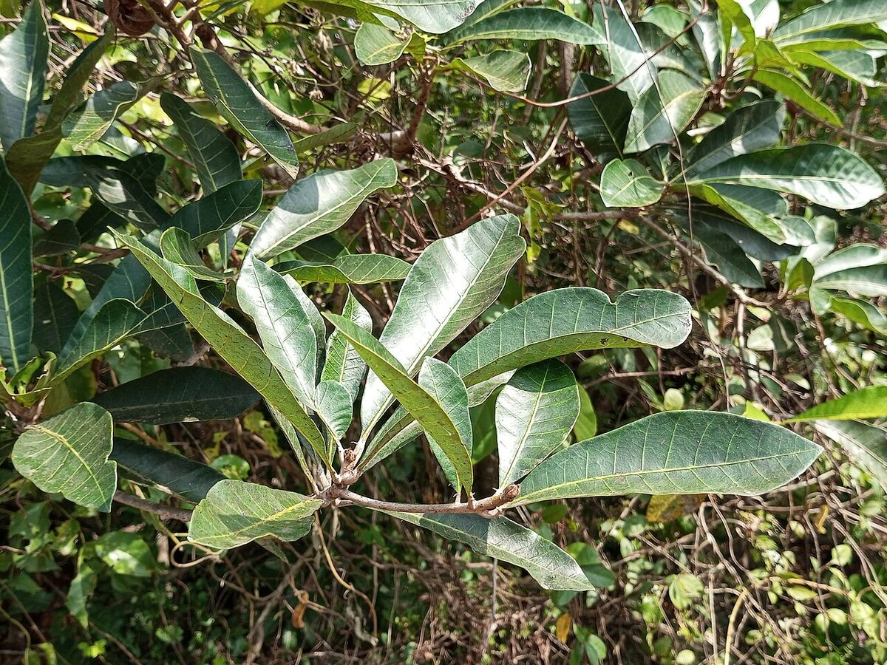

Plant Library › Bhallataka
Bhallataka
Semecarpus anacardium L.f.
NCISM 97 · No. 9
Heart-shaped or ovoid dark shiny black drupe seated on an orange-yellow fleshy receptacle (receptacle edible), pericarp filled with corrosive black vesicating juice.

Verified study data
- Sanskrit name
- भल्लातक
- Botanical name
- Semecarpus anacardium L.f.
- Family
- Anacardiaceae
- English name
- Marking Nut / Clearing Nut
- Habit
- Medium-sized deciduous tree, 10–15 m tall.
- Description
- Heart-shaped or ovoid dark shiny black drupe seated on an orange-yellow fleshy receptacle (receptacle edible), pericarp filled with corrosive black vesicating juice.
- Rasa
- madhura, katu, tikta, kashaya
- Guna
- laghu, tikshna, snigdha
- Virya
- ushna
- Vipaka
- madhura
- Useful part
- Purified Fruit pericarp / Nut (Shodhita Phala / Seed oil)
- Indications
- Arsha (Bleeding and non-bleeding hemorrhoids), Kushta (Chronic skin diseases / Psoriasis), Shotha (Edema), Gulma (Abdominal tumors / Masses), Kaphaja Roga (Severe Kapha disorders), Grdhrasi (Sciatica)
- Dose
- 1–2 g of shodhita drug in kshirapaka form (API).
- Anupana
- Milk (kshirapaka) and ghee; give with ample ghee and milk in the diet.
- Precautions
- Must be used only after shodhana. The raw nut oil is a severe contact irritant producing blistering dermatitis; ghee or coconut is applied before handling. Avoid exposure to heat and sun during use and take a ghee- and milk-rich diet.
- Contraindications
- Contraindicated in pregnancy, in children and the elderly, in Pitta-predominant persons, bleeding disorders, kidney disease and hot season; never used without shodhana.
- Therapeutic actions
- Deepana, Pachana, Chedana, Bhedana, Rasayana, Vrishya, Kushtaghna, Krimighna
- Quick revision
- Powerful digestive and stimulant, used under medical supervision for vata disorders.
- Shloka / classical text
- भल्लातकं त्रिषु प्रोक्तमरुष्कोऽरुष्करोऽग्निकः । तथैवाग्निमुखी भल्ली वीरवृक्षश्च शोफकृत् ॥२००॥, भल्लातकफलं पक्वं स्वादुपाकरसं लघु । कषायं पाचनं स्निग्धं तीक्ष्णोष्णं चेदि भेदनम् ॥२०१॥, मेध्यं वह्निकरं हन्ति कफवातव्रणोदरम् । कुष्ठार्शोग्रहणीगुल्मशोफानाहज्वरक्रिमीन् ॥२०२॥, तन्मज्जा मधुरो वृष्यो बृंहणो वातपित्तहा । वृन्तमारुष्करं स्वादु पित्तघ्नं केश्यमग्निकृत् ॥२०३॥, भल्लातकः कषायोष्णः शुक्रलो मधुरो लघुः । वातश्लेष्मोदरानाहकुष्ठार्शोग्रहणीगदान् । हन्ति गुल्मज्वरश्वित्रवह्निमान्द्यकृमिव्रणान् ॥२०४॥
- Nighantu references
- Bhavaprakasha Nighantu, Bhallataka passage, verses 200–204 in the Vishvasa searchable transcription; printed editions/recensions may number this passage differently.
- Samhita references
- Not available in verified record
Important formulations
- Sanjivani Vati
- Bhallataka Rasayana
- Amrita Bhallataka Lehya
- Bhallatakadi Taila
- Bhallatakadi Asava
Academic trust & review
This page is a static, crawlable rendering of the DravyaGuna 97 database record. It does not invent missing fields.
Reviewer attribution is shown only when a named reviewer is actually recorded in the project data. See the Sources & Review page for the verification framework and source policy.
Continue to full dossier
The interactive dossier contains the full image gallery, detailed textbook notes, MCQs and revision tools.
Sources recorded for this entry
- CCRAS medicinal plant research — source
- NCISM II BAMS Dravyaguna Vigyan curriculum — source
- TDU Indian Medicinal Plants Database — source
- TDU Indian Medicinal Plants Database — Ayurvedic identity and Shlokas — source
- Amidha Ayurveda Herb Database v2.0 — source
- Bhava Mishra — Bhavaprakasha Haritakyadi Varga searchable transcription — source